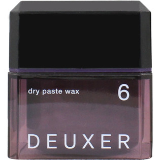

返回列表
产品名称：デューサー ドライペーストワックス 6

ナンバースリー デューサー ドライペーストワックス 6 ８０ｇ
メーカー ナンバースリー
JANコード 4985514032463
商品の特徴
○立体感と軽さ
○軽いのに自由自在にアレンジ
- 成分・分量
- ワセリン、カオリン、ミネラルオイル、パラフィン、PEG-60水添ヒマシ油、ミツロウ、マカダミアナッツエステル、トコフェロール、パルミチン酸デキストリン、BHT、エチルパラベン、香料
- 用法及び用量
- ＜使用方法＞
○少量を手のひらでよくのばしてから、髪になじませてください。
○使用後は必ずキャップをしめてください。